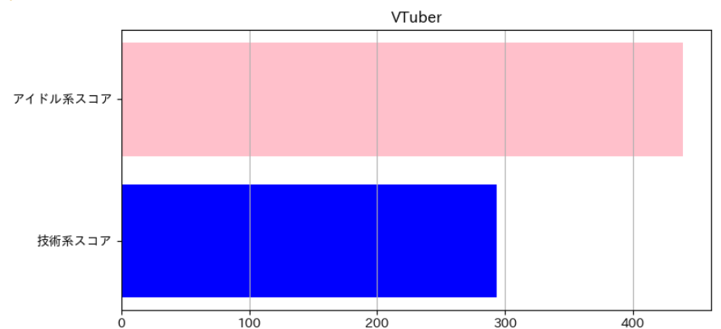
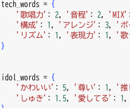
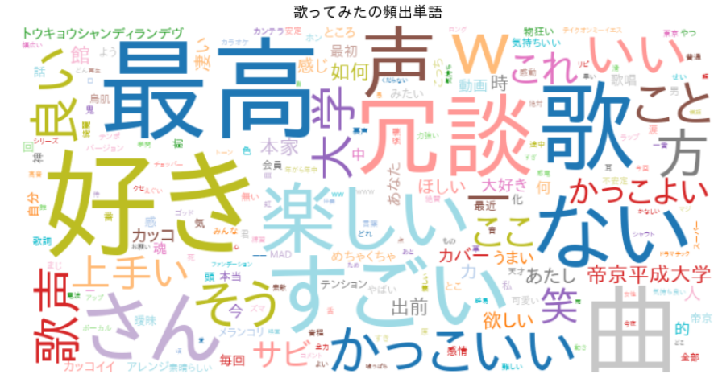
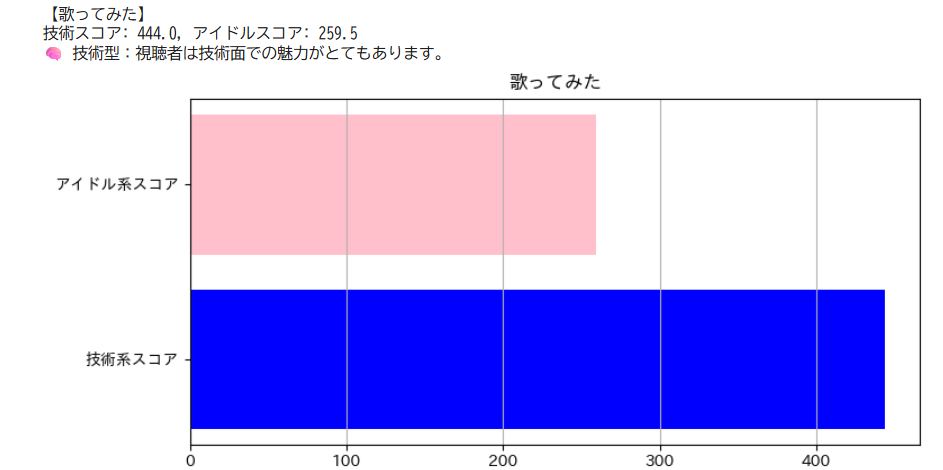
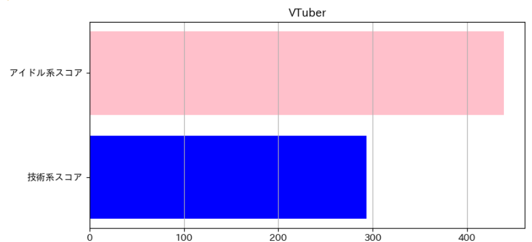

6. 結果：アイドル性
・技術スコア 低 293.5
・アイドルスコア 高 439.0
視聴者→ビジュアルや感情的な魅力を評価。感情的な語が多く、ファンの感情的なつながりが強いことがわかる。可愛いが一番大きく出ている、その子の存在自体を大きく支持してる。
桃鈴ねねさん『トウキョウ・シャンディ・ランデヴ / MAISONdes full covered by 桃鈴ねね』

発表題目： YouTubeコメント分析による音楽動画の価値推定
発表者： 24B1032 矢野叶
近年、VTuberや「歌ってみた」などのtiktok・youtube市場は急速に拡大し、単なる趣味的文化から商業的価値へと変化している。動画制作側は「技術性」と「アイドル性」という二つの異なる評価軸でファンの支持を得る必要があり、そのバランスが重要。本研究では、YouTubeコメントを通じて視聴者の評価軸を定量的に把握し、制作・マーケティング戦略に役立てることを目的としている。
例：歌唱力、編集、プロ、表現力、MIXなど
例：かわいい、推し、尊い、ファンサ、笑顔など
技術性：歌唱力・編集技術・表現力など、作品の「完成度」や「職人性」に関わる魅力
アイドル性：ビジュアル・感情的魅力・キャラ性など、視聴者が「推したくなる」魅力
YouTubeコメントには両方の価値軸が混在しており、どちらがより多く現れているかで動画の評価タイプを推定
数百件のコメントを数値的に分析することで、感覚ではなく客観的な評価が可能
・技術スコア 高 444.0点
・アイドルスコア 低 259.5点
視聴者→技術面の魅力を評価。技術的な用語が中心に多く現れており、歌唱力や編集技術が注目されていることがわかる。
 ・技術スコア 低 293.5
・アイドルスコア 高 439.0
視聴者→ビジュアルや感情的な魅力を評価。感情的な語が多く、ファンの感情的なつながりが強いことがわかる。可愛いが一番大きく出ている、その子の存在自体を大きく支持してる。
桃鈴ねねさん『トウキョウ・シャンディ・ランデヴ / MAISONdes full covered by 桃鈴ねね』

分析体験・ソース公開しています！この分析ツールは、GitHubとHugging Face Spacesを組み合わせて公開しています。誰でもブラウザ上でYouTubeコメント分析を体験可能！研究の再現性・応用性を意識した設計になっています。